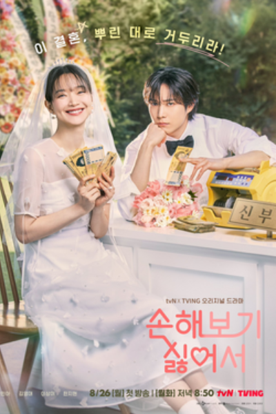

Kdrama
I am drawn to K-drama because it provides a much-needed balance in my life, especially during those tiring moments when everything feels overwhelming.
Learn MoreJESSA LYN B. DALMACIO

Life is a drama of its own, but I prefer mine with subtitles, a killer soundtrack, and a happy ending. Whether it's a new hobby, a daring plan, or just another way to procrastinate, I’m always on the lookout for my next plot twist!
I am drawn to K-drama because it provides a much-needed balance in my life, especially during those tiring moments when everything feels overwhelming.
Learn More.jpg)
Before I got into K-dramas, Wattpad books were my go-to escape. They opened up imaginative worlds and told relatable stories, helping me disconnect from everyday stress. Just like K-dramas, the storytelling in Wattpad provided an emotional outlet, allowing me to relax and regain balance when life felt overwhelming. It was my way to recharge, offering a comforting mix of romance, drama, and excitement in every story I read.
Learn More.jpg)
I love pasta and chocolate cake because they’ve always been my comfort foods. Pasta, with its variety of sauces and textures, has a way of soothing me, especially when I need something warm and filling. And chocolate cake is my go-to treat whenever I crave something sweet—its deep, satisfying taste instantly lifts my mood. Both bring a sense of familiarity and happiness, making them my perfect comfort foods whenever I need a little pick-me-up.
Learn More.jpg)
These two places are on my list of interests because it has always been a dream of mine to visit them. The beauty and charm of these destinations have captured my heart, and exploring them would be a dream come true.
Learn More
the k-drama addict
Hi, I’m Jissa, a passionate individual who loves discovering new things and embracing life’s adventures. Balancing my career goals with personal hobbies is important to me, whether it's through watching K-dramas, getting lost in the pages of a Wattpad story, or enjoying comfort foods like pasta and chocolate cake. I believe in working hard while also appreciating the small moments that bring joy and peace. My ultimate dream is to travel the world, create meaningful memories with my loved ones, and continue growing both personally and professionally.
.jpg)
.jpg)
.jpg)
.jpg)
.jpg)
.jpg)
First and foremost, my main goal is to graduate. I see graduation as a significant milestone because it marks the beginning of the real challenges in life. After I graduate, I’ll need to focus on finding a stable job and navigating my career path, which is both exciting and daunting.
Finding a stable job is my next goal because it represents a significant step towards building my independence and financial security. A stable job will not only provide me with the means to support myself but also help me gain valuable experience in my field. I see it as a crucial foundation for achieving my long-term aspirations, including traveling, creating memories with loved ones, and continuing to grow both personally and professionally. It’s an opportunity to apply what I’ve learned in school and contribute to something meaningful while preparing for future challenges.
Owning a home is a significant goal for me because it represents more than just having a place to live; it’s about creating a space that feels truly mine. I envision a home filled with warmth, love, and cherished memories, a sanctuary where I can build my life and share it with my loved ones. It’s about establishing roots and having a stable environment that reflects my personality and values. Owning a home will also provide a sense of security and a foundation for future growth, allowing me to invest in my dreams and create lasting memories with family and friends.
Owning a car is important to me because it represents independence and freedom. It gives me the ability to travel wherever I want, whether it’s for work, leisure, or spending time with loved ones. Having my own car will make it easier to manage my daily responsibilities and explore new places without relying on others.
Going on food trips is one of my goals because I have a deep love for food. Exploring new cuisines and trying different dishes allows me to indulge my taste buds and discover unique flavors. It’s not just about eating; it’s about the experience of sharing meals with friends and family, creating memories, and appreciating the diverse culinary traditions of different places.
Traveling with my family and loved ones is a significant goal for me. As a student, I realize that travel often requires financial resources, which can be a challenge right now. I want to create unforgettable memories and share experiences with those closest to me. Having a stable job and sufficient funds will enable me to make this dream a reality, allowing us to explore new places together and strengthen our bonds.

If you want to make people around you happy, you have to find your own happiness first.

It’s okay to take your time. You don’t have to rush.
.jpg)
Major and minor chords must coexist harmoniously for a song to sound delightful and complete. The same goes for life. Experiencing hardships and joyful moments help you build your dazzling life.
.jpg)
Before you ask others to like you, please like yourself as much as you can. And cherish yourself. That should help.
Being selfish isn't always a bad thing. Try to only think about you happiness when things are too stressful